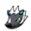
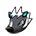
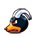
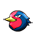
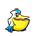
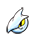
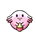
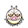
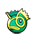
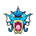

Mauville
Eruption + Dragon Claw
VS Air Balloon  switch out Garchomp into Togekiss Hyper Voice
Eruption + Dragon Claw
VS Air Balloon  switch out Garchomp into Togekiss Hyper Voice
Water Spout + Togekiss Helping Hand
VS  / Lvl.85  Hyper Voice
Hyper Voice
Water Spout + Blizzard
Fake Out (prioritise ) + Explosion into Eruption + Hyper Voice
VS  /  use Water Spout instead of Fake Out
VS follow into Blizzard + Hyper Voice instead
Water Spout + Assurance
Water Spout + Explosion into Eruption + Blizzard
VS  Fake Out on 
You can use Water Spout instead of Fake Out if you want to risk the 3-turn, pray Slaking doesn't press Rock Slide and flinch Weezing
VS follow into Eruption + Earthquake then Blizzard + Earthquake
VS  follow up with Hyper Voice + Earthquake
Water Spout + Explosion into Hyper Voice + Earthquake
VS  follow with Eruption + Earthquake instead into Hyper Voice + Earthquake